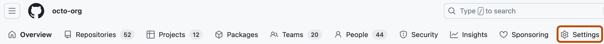

Turn on Code Quality to give your teams a consistent quality baseline: automatically catching, fixing, and reporting code quality issues in pull requests and on your default branch.
You can enable Code Quality for a single repository, or for every repository in an organization at once. Enabling at the organization level gives all your teams a consistent quality baseline with a single change, while enabling per repository lets you target specific projects or roll out gradually.
GitHub Actions must be enabled because Code Quality uses actions to run each CodeQL analysis.
To get the full benefit of the feature, your repository should include one of the languages supported for quality analysis by CodeQL. See Supported languages.
Enabling Code Quality for your repository
On GitHub, navigate to the main page of the repository.
Under your repository name, click Settings. If you cannot see the "Settings" tab, select the dropdown menu, then click Settings.
In the sidebar, under "Security", click Code quality to display the "Code quality" page.
Click Enable code quality.
Review the information on the Code quality page:
Languages: If you want to disable CodeQL analysis for any of the languages, clear the associated check box.
At the organization level, you control Code Quality with a single Repository access setting. This gives you granular options, from enabling every repository to targeting a specific list or a dynamic filter, so you can pilot Code Quality intentionally and roll it out at your own pace. Repositories within your selection are enabled, and repositories outside your selection are disabled.
On GitHub, navigate to the main page of the organization.
Under your organization name, click Settings. If you cannot see the "Settings" tab, select the dropdown menu, then click Settings.

In the sidebar, under "Security", click Code quality.
Under "Repository access", select an option from the dropdown menu.
If you selected Selected repositories..., choose the repositories you want to enable.
If you selected Matching a filter..., define your filter.
Optionally, to prevent repository administrators from changing these settings, enable Enforce access.
If your change enables or disables Code Quality on any repositories, a "Review enablement and billing changes" dialog appears, showing the total number of enabled and disabled repositories and the associated costs. Review the details, then click Confirm.
Your changes are saved automatically and begin to propagate immediately. In large organizations, it can take several minutes for the changes to apply across all repositories.
If you're rolling out the feature across many teams, we recommend you pilot on a small group and tune your quality thresholds before you enable everywhere. See Rolling out GitHub Code Quality at scale.
Scan frequency after enablement
When you enable Code Quality, an initial CodeQL scan runs on the default branch. Weekly scheduled CodeQL scans start only after a push or pull request triggers a scan. Pushes and pull requests from before enablement do not count as activity.
Weekly scheduled scans pause if no push or pull request has triggered a scan in the last 180 days. Initial scans, scans triggered by configuration or language changes, and scheduled scans do not count as activity. A new push- or pull-request-triggered scan resumes the weekly schedule.